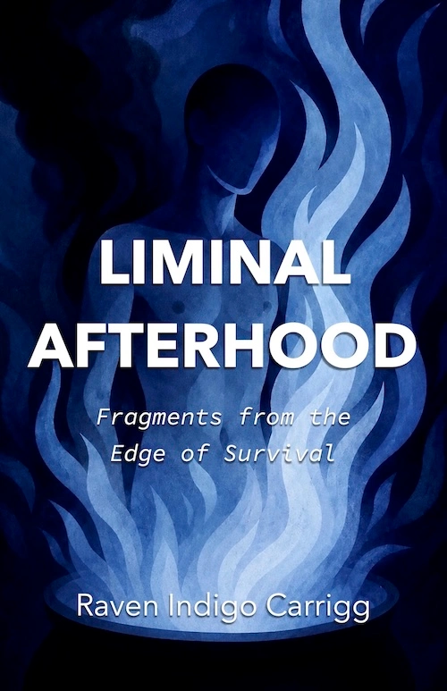

Poetry collection
Liminal Afterhood
Fragments from the Edge of Survival
Liminal Afterhood: Fragments from the Edge of Survival is an experimental poetry collection and trauma-survival archive by Raven Indigo Carrigg.
The collection explores suicide survival, trauma memory, queer and trans identity, rupture, nonlinear recovery, and self-reclamation through lyric poetry, free verse, personal archival fragments, field notes, and computationally recombined language.
Rather than presenting survival as a clean timeline or distant retrospective, Liminal Afterhood moves through fragmentation, collision, sensation, contradiction, rupture, repetition, humor, and sudden weather.
At its center are the GNOEMs: small poetic organisms distilled from more than a decade of personal archives. They recombine language, feeling, image, panic, tenderness, crisis, humor, longing, trauma, and survival pressure into forms that can breathe.
The book reflects Raven’s interest in lived-experience storytelling, creative recovery, nonlinear memory, computational poetics, and the role of voice in meaning-making after crisis.